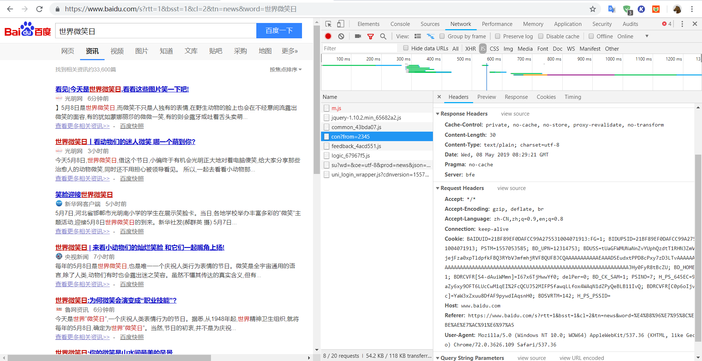

模拟登录，cookie的使用
某些网站，登录和没登录，用户的权限是不一样的，帐号登录之后才能获取更多的信息。更有甚者一上来就是登录界面，不登录就不给你进去。爬取目标不用登录固然是好，但需要时也没办法啊，这时如果还想爬取信息，就必须让爬虫学会登录。
Cookie
简单的说，cookie是服务器安在客户端的“监视器”，记录了包括登录状态在内的所有信息，这些信息由服务器生成和解释，服务器通过客户端携带的cookie来识别用户。cookie存在生命周期，短的关掉浏览器就失效，长的能若干天免登陆，一旦失效就要重新获取。所以只要得到登录后的cookie并必要时进行更新，服务器就会认定其为登录状态。
注意：并不是说学会这几种方法你就完全掌握了模拟登录，加密，验证系统也可能成为模拟登录的头号劲敌，如果查遍全网都没得到满意的答案，selenium大佬也被识别了，那估计是没救了
从浏览器获取
这是最简单也是最容易见效的方法，在浏览器上登录并进行足够多操作后便能得到足量的cookie，打开F12捉包观其headers即可

图中上方的set-cookie是响应cookie，也就是服务器要保存在客户端的cookie；下方的cookie则是要提交给服务器的cookie，也是我们的目标，让requests使用这个cookie有两种方法，一是原封不动把cookie字符串放入headers字典中提交，二是把cookie字符串变成字典再由cookies参数提交，转换方法如下。
1 | def cookie_to_dict(cookie): |
这种直接获取的方法缺点也很明显，就是不能追踪set-cookie并更新，原来的cookie一旦失效，就要重新手动获取
插入关于谷歌浏览器F12抓包分析的知识：
打开Chrome自带的开发者工具，开发者工具会出现在浏览器网页的左侧或者是下面（可调整），它的样子就是这样的：
谷歌Chrome抓包:1. 最上面一行菜单
- 左上角箭头 用来点击查看网页的元素
- 第二个手机、平板图标是用来模拟移动端显示网页
- Elements 查看渲染后的网页标签元素
- 提醒 是渲染后（包括异步加载的图片、数据等）的完整网页的html，不是最初下载的那个html。
- Console 查看JavaScript的console log信息，写网页时比较有用
- Sources 显示网页源码、CSS、JavaScript代码
- Network 查看所有加载的请求，对爬虫很有帮助
- 后面的暂且不管。
谷歌Chrome抓包:2. 重要区域
图中红框的两个按钮比较有用，编号为2的是清空请求记录；编号3的是保持记录，这在网页有重定向的时候很有用
图中绿色区域就是加载完整个网页，浏览器的全部请求记录，包括网址、状态、类型等。写爬虫时，我们就要在这里寻找线索。
最下面编号为4的红框显示了加载这个网页，一共请求了181次.
图中左边红框就是点击的请求网址；绿框就是详情窗口。
详情窗口包括，Headers（请求头）、Preview（预览响应）、Response（服务器响应内容）和Timing（耗时）。
Preview、Response 帮助我们查看该条请求是不是有爬虫想要的数据；
Headers帮助我们在爬虫中重建http请求，以便爬虫得到和浏览器一样的数据。
session维持
session名为“会话”，即多个请求的行为。requests库提供了会话对象（requests.Session）让使用者能跨请求保持某些参数如cookie，而且能自动处理服务器发来的cookie，使得同一个会话中的请求都带上最新的cookie，非常适合模拟登录。使用上也非常简单，实例化后几乎相当于一个requests对象拥有get，post等方法，text，cotent等属性。为了方便下次登录，还可以把第一次session登录后的cookie通过cookiejar保存到本地供下次读取免去登录
1 | import requests |
虽说session使cookie管理变得一劳永逸，但登录包中post参数的构造可能是一个深坑，post的是帐号密码明文那简单；蛋疼的是如果帐号密码连同其他数据经js加密成密文作为post数据，那你就得从js中挑选并分析加密算法，还要用python实现（某些加了混淆的js像天书一样）。如果无法破译加密，requests登录就是一张白纸，cookie就更不用谈了，给你再牛逼的管理工具也没用。同时对方程序员的勤奋程度也是一个考虑因素，别人经常改算法，你也要重新看js改代码。
综上，session适用于没有加密的登录或者加密算法比较简单并且不常更新的网站。
selenium
借助浏览器完备的js解析能力，你根本不用考虑它是如何加密的，只要输入账号密码，最多再加个验证码，浏览器直接运行js把他们直接变成密文并post过去，完成登录，就像我们平时操作那么简单。所以有一种巧妙的方法是先用selenium进行模拟登录，然后再提取cookie给session用免去session模拟登录的过程（当然也可以继续selenium下去）。在代码中，往往就是定位，点击，定位，发送帐号密码，Enter（或者定位点击登录键），等待一段时间让cookie加载完后将其打包成RequestsCookieJar给session用就可以了。如对付知乎可以这样做：
1 | import requests |
有些网站能识别人操作的浏览器和selenium操作的浏览器，使登录受到拒绝，譬如用selenium模拟登录网易云音乐就会提示登录异常。如果不能对js进行逆向工程分析出其识别算法，那只能放弃selenium走requests那条要分析加密的老路